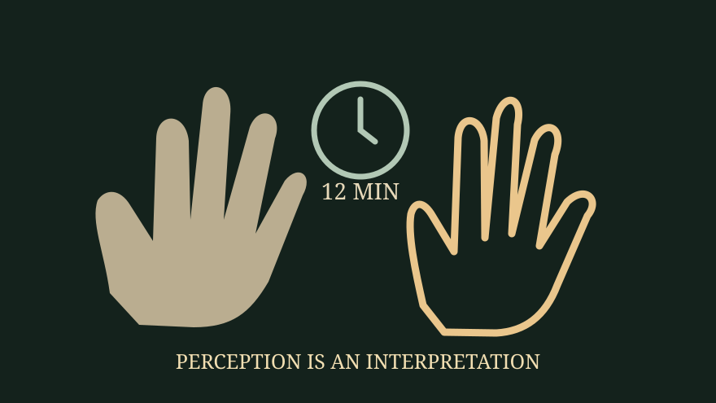

Final Vestige Studios · Tools under review · Unpublished
Would a 12-minute audio routine earn a place in your day?
If you want to meditate but find starting difficult, the product worth evaluating is not a miracle. It is a format: brief audio sessions that offer enough structure to help you decide whether the routine suits you.
Independent buyer's guide · Public seller pages checked 17 November 2026 · Commercial offer inactive · This document is not a product endorsement
A small mystery before an expensive assumption
In a classic experiment, a visible rubber hand and a hidden real hand were brushed in matching time. Some observers reported a surprising sense of ownership of the artificial hand. That result says something about how the senses combine information, not that audio can turn anyone into a different person. In 2011, researchers found that one measure of the illusion—where people thought their finger was—could shift without a corresponding sense of ownership. A 2023 analysis found the measures correlated, but imperfectly. The lesson is that the headline and the measurement are not the same thing.
Apply that discipline here. Zen12 markets a change in your experience. A twelve-minute recording is an observable product format. A promise that it produces the equivalent of an hour of meditation is an efficacy claim requiring product-specific evidence. A consumer should not have to confuse the two to make a fair decision.
Read the original published change-blindness investigation or the unpublished rubber-hand research draft in this review package for the methods behind the broader point.
One useful test before any purchase
Choose a safe, quiet time and set a 12-minute timer with no special recording.
Sit comfortably and attend to neutral ambient sound or the ordinary sensation of breathing, without trying to force silence.
Each time you notice your attention wandering, gently return. Stop if you feel distressed.
Record whether the routine was approachable, not whether it “rewired” anything. Repeat on a second day if you want to compare.
If you mainly need prompts, timeboxing and a way to record attempts, the existing free, 52-page Seven Day Focus Fieldbook already provides a structured starting point through Final Vestige's single Jetpack/Dispatch path. Access is optional; no purchase or duplicate email list is required to keep reading this guide.
Watch, or simply read: 42 seconds on the difference between a feeling and a fact

Original SVG poster. Video concept only: the film has not been encoded or made playable; nothing autoplays or downloads.Read the 42-second narration and captions concept
0–7s. Two hands lie on a table. Only one is yours.
7–14s. Matched sight and touch can change how ownership feels.
14–21s. But another measure can move without that feeling.
21–28s. A strong experience isn't the same as proof of its cause.
28–35s. That's why short meditation audio deserves an honest comparison.
35–42s. Try twelve minutes free. Then judge the seller's actual offer.
Caption source: R447_42S_ORIGINAL_CAPTIONS.vtt. No autoplay. No tracking. No audio claim or medical outcome.
What the seller actually describes
A manageable session length
Zen12's official About page describes sessions lasting 12 minutes, a progressive course with 12 levels, and four listening styles: guided meditation, music, white noise, and nature sounds. Those are seller-described features, not an independent evaluation of audio quality or effectiveness.
Bundles need exact checkout verification
The official site and a separate promotional page show differing offer presentations. One promotional full-course page describes 48 MP3s plus guides and bonuses. That does not establish which package, price, policy or download a referred buyer would receive. No price or countdown is carried into this guide.
Source custody (public information, not earning links): Inspire3 official catalog inspire3.com; Zen12 About zen12.com/about; distinct promotional offer zen12.com/secret/. No affiliate or checkout URL appears in this unpublished pilot.
What has not been demonstrated
The seller's language that twelve minutes provides the benefit of an hour, or that sound automatically creates deeper mental states, is an advertising claim—not a conclusion Final Vestige can substantiate for the named commercial recordings. Research on generic meditation, attention, brain rhythms or perceptual illusions does not substitute for a controlled test of this particular product and its promised result.
We have not used, purchased, independently audited or clinically tested Zen12, and will not imply otherwise. The same evidentiary boundary applies to distinct Inspire3 brands such as Hypnosis Live or Brainwave Shots. Avoid any medical, psychiatric, financial or guaranteed personal transformation inference from this guide.
Which exact tier is available? Confirm the number of levels, tracks, formats and included guides. Do not assume every public bundle is the same.
What is actually charged? Read the final price, currency, taxes and any upsell screens at the referred checkout. No current price is validated here.
What does the refund promise say? Confirm its scope, time limit, contact path and exclusions on the exact approved destination; marketing language alone is not enough.
Can I access the files on my devices? Verify format, account/access procedure, download delivery and support before paying.
What am I buying beyond the free alternative? Decide whether guidance, sound choices and routine structure are worth the expense to you without requiring belief in unproven physiological outcomes.
Considering Zen12? The purchase link is withheld.
This page is a review-only presell pilot. Final Vestige's named partner approval, authorization for this product and channel, issued earning URL, referred checkout and refund terms have not been authenticated. An affiliate offer cannot be activated responsibly before those conditions are verified and separately approved for release.
Affiliate disclosure (for a possible future link): If you purchase through an approved affiliate link on this site, Final Vestige may earn a commission at no additional cost to you. There is currently no active affiliate link on this page.
Disabled by design: partner and checkout permissions are unverified. This is not a broken or hidden shopping link.
The controlled question, once commercial permission exists
Should an original, optional 42-second explanation help readers make a more informed buying decision, or would a text-only guide perform just as well? A and B preserve the same offer copy and CTA; B alone adds the illustrated, self-initiated short-film concept. This is a hypothesis, not a claim of improved conversions.
Before testing: encode rights-cleared media, supply captions and transcript, check no forced playback/no JavaScript, test small screens and assistive tech, secure release permission, and verify exact partner terms. Then randomize qualified consenting sessions once, report 7/30-day cohort outcomes using **verified net revenue**, not merely video views or outgoing clicks. No test traffic or sales are claimed here.